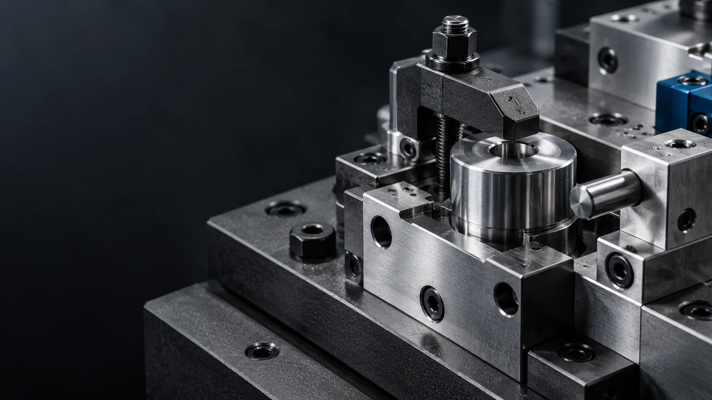

HOME / COMPANY / CEO MESSAGECEO MESSAGE
인사말
설계에서 제작까지, 고객의 생산공정에 책임 있게 함께하겠습니다.
XYZTECH · DESIGN & MANUFACTURING배경: AI 연출 이미지
A MESSAGE FROM XYZTECH산업기술의 이미지를 표현한 AI 연출 이미지
“현장의 조건을 깊이 이해하고, 설계에서 제작까지 책임 있게 연결하겠습니다.”

안녕하십니까.
XYZTECH 홈페이지를 찾아주신 여러분께 진심으로 감사드립니다.
XYZTECH는 기계·자동화설비와 용접지그 분야의 전문성을 바탕으로 고객의 생산공정에 필요한 설비를 설계하고 제작합니다. 자동화설비는 도면의 완성도뿐 아니라 실제 가공과 조립 과정에서의 정합성이 중요합니다.
고객의 요구조건과 생산환경을 정확히 파악하고 제작성, 조립성, 작업성과 유지보수성을 설계 단계부터 검토하겠습니다. 설계 의도가 제작 결과물에 온전히 반영되도록 각 과정을 책임 있게 연결하겠습니다.
끊임없는 기술 연구와 업무 표준화를 통해 고객의 아이디어가 신뢰할 수 있는 설비로 완성되도록 돕는 엔지니어링 파트너가 되겠습니다. 변함없는 신뢰와 책임감으로 보답하겠습니다.
감사합니다.
XYZTECH 대표박재훈
XYZ TECH